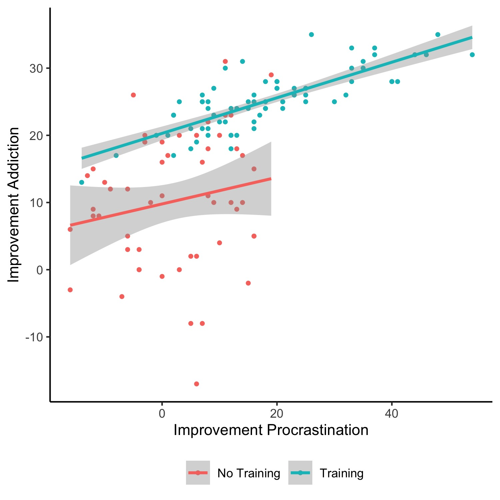

Herzlich Willkommen!
Diese interaktive Plattform wurde speziell für den Kurs R - Übung zur computergestützten Datenanalyse entwickelt, um Ihnen eine praktische und anschauliche Lernumgebung zu bieten. Mit dieser Oberfläche haben Sie die Möglichkeit, die im Seminar erworbenen Fähigkeiten unmittelbar anzuwenden und zu vertiefen.
Auf dieser Plattform finden Sie eine Vielzahl von Beispielen und Übungen, die darauf ausgelegt sind, Ihr Verständnis von R zu verbessern. Jede Übung ist darauf ausgerichtet, spezifische Konzepte und Techniken zu vermitteln, sodass Sie Ihr Wissen erweitern und festigen können.
Beginnen Sie nun, indem Sie eine der verfügbaren Übungen auswählen. Die interaktive Oberfläche ermöglicht es Ihnen, sofort Feedback zu Ihren Lösungen zu erhalten und bei Bedarf Änderungen vorzunehmen. Nutzen Sie diese Gelegenheit, um in Ihrem eigenen Tempo zu üben und zu lernen.
Bitte beachten Sie, dass die learnR Oberfläche kontinuierlich erweitert wird, sodass Ihnen immer neue Lerninhalte zur Verfügung stehen.
Viel Erfolg und Spaß beim Entdecken der Möglichkeiten mit R!
Stephan Goerigk und Team
Einheit 1
Grundlegende Arithmetik
Willkommen im Abschnitt Grundlegende Arithmetik in R und RStudio!
In diesem Tel der learnR Oberfläche haben Sie die Möglichkeit, grundlegende arithmetische Operationen wie Addition, Subtraktion, Multiplikation und Division in R praktisch anzuwenden.
Anmerkung: Falls Sie die Lösung der Befehle aufrufen wollen, können
Sie auf Solution klicken. Sie finden dabei unter Umständen
auch Anmerkungen zu den spezifischen Herausforderungen einzelner
Aufgaben.
Aufgabe 1: Berechnen Sie das Ergebnis der Subtraktion \(534 + 16\).
534+16Aufgabe 2: Berechnen Sie das Ergebnis der Subtraktion \(7 - 3\).
7-3Aufgabe 3: Berechnen Sie das Ergebnis der Multiplikation \(3 \cdot 9\).
3*9Aufgabe 4: Berechnen Sie den Mittelwert der Messwerte 11, 18, 32, 10, 33, 18, 25, 69, 39, 12. Verwenden Sie dafür keine fertigen Funktionen, sondern nur Grundrechenarten. Führen Sie die Berechnung mit einem Befehl (ohne Zwischenergebnisse) durch.
(11+18+32+10+33+18+25+69+39+12)/10Aufgabe 5: Berechnen Sie das Ergebnis der Division 1 \(\div\) 7 und runden Sie das Ergebnis auf zwei Nachkommastellen.
Hinweis: Zum Runden von Zahlen (sowie Ergebnissen einfacher arithmetischer Operationen) können Sie die Funktion “round()” verwenden.
round(1/7, digits = 2)Aufgabe 6: Berechnen Sie das Ergebnis der Potenz \(3^3\).
3^3
# Alternative: 3**3Aufgabe 7: Berechnen Sie das Ergebnis der Wurzel aus 324.
sqrt(324)Aufgabe 8: Berechnen Sie das Ergebnis des Ausdrucks \(\sqrt{9} \cdot (2+6)\).
sqrt(9)*(2+6)Aufgabe 9: Berechnen Sie das Ergebnis des Ausdrucks \(\sqrt{4} \cdot \frac{8^3 - \pi \cdot 8}{\frac{4}{2} + 16.75 \cdot 8^{\frac{4}{3}}}\).
Hinweis: Verwenden Sie den ausgeschriebenen Begriff ‘pi’, um die Zahl zu repräsentieren.sqrt(4) * ((8^3 - pi * 8) / ((4/2) + 16.75 * 8^(4/3)))Aufgabe 10: Überprüfen Sie folgende Aussage: \(4^2 + 3^2 = 7^2\)
4^2 + 3^2 == 7^2Aufgabe 11: Überprüfen Sie folgende Aussage: \(4^2 \neq \frac{{43 - 11}}{{2}}\)
4^2 != ((43-11)/2)Aufgabe 12: Rufen Sie die Hilfe zur Funktion
summary unter Verwendung zwei unterschiedlicher Methoden
auf.
?summary
help(summary)Datenformate
Willkommen im Abschnitt Datenformate in R und RStudio!
In diesem Bereich werden Ihnen Übungen zu den grundlegenden Datenstrukturen begegnen, die in der Programmiersprache R verwendet werden: Skalare, Vektoren und Data.Frames. Jede dieser Strukturen spielt eine wichtige Rolle in der Datenverarbeitung und -analyse. Viel Erfolg!
Aufgabe 1: Weisen Sie dem Skalar
a den
Wert 150 zu:
a = 150
# Alternative: a <- 150Aufgabe 2: Weisen Sie dem Skalar b das
Ergebnis der Rechnung \(3 \div 100\) zu
und lassen Sie sich dieses zudem ausgeben.
b = 3/100
bAufgabe 3: Weisen Sie dem Skalar
c den
Wert \(50\), dem Skalar d
den Wert \(3\) und dem Skalar
e das Ergebnis der Rechenoperation \((c + d) \div d\) zu. Lassen Sie sich das
Ergebnis von e zudem ausgeben.
c = 50
d = 3
e = (c+d) / d
eAufgabe 4: Weisen Sie dem Skalar
f das
Ergebnis der Rechnoperation \(5 + 4\),
dem Skalar g den Wert \(10\) zu und überprüfen Sie unter Verwendung
der beiden Skalare, ob diese gleich sind.
f = 5+4
g = 10
f == gAufgabe 5: Erstellen Sie den Skalar
h, der
das Wort Charlotte Fresenius und den Skalar i,
der das Wort Carl Remigius Fresenius beinhaltet. Lassen Sie
sich lediglich den Inhalt des Skalars i ausgeben.
h = "Charlotte Fresenius"
i = "Carl Remigius Fresenius"
iAufgabe 6: Speichern Sie die drei Grundfarben
blau, gelb und rot in einem
Vektor mit dem Namen Farben und lassen sich diesen
ausgeben. Wählen Sie aus dem Vektor anschließend die Farbe
blau aus und speichern Sie diese als Objekt mit dem Namen
Wasser. Lassen Sie sich diesen zudem ausgeben.
Farben = c("blau", "gelb", "rot")
Farben
Wasser = Farben[1]
WasserAufgabe 7: Erstellen Sie den Character-Vektor
Freunde mit den Namen Florian,
Eva und Philipp und lassen sich diesen
ausgeben. Fügen Sie anschließend den Namen Tanja hinzu und
überprüfen Sie Ihre Ergänzung.
Freunde <- c("Florian", "Eva", "Philipp")
Freunde
Freunde <- c(Freunde, "Tanja")
FreundeAufgabe 8: Erstellen Sie einen Vektor
j,
der die Werte der ganzen Zahlen von 1 bis 7 enthält. Erstellen Sie
anschließend eine Matrix k, welche die Werte des Vektors
j in 3 Zeilen und 6 Spalten enthält. Wählen Sie zuletzt die
dritte Zeile der Matrix aus und weisen Sie diese dem Vektor
l zu.
j = c(1, 2, 3, 4, 5, 6, 7)
j
# Alternative: j = c(1:7)
k = matrix(j, nrow = 3, ncol = 6)
l = k[3, ]Aufgabe 9: Bitte erstellen Sie den Vektor
m, der die Werte 15, 30, NA, 40 und 80 enthält.
Anschließend berechnen Sie den Mittelwert von m mithilfe der Funktion
mean.
m = c(15, 30, NA, 40, 80)
mean(m) # Ergebnis ist NA
mean(m, na.rm=TRUE) # Fehlende Werte (NAs) werden ignoriertAufgabe 10: Erstellen Sie den Vektor
sd,
der die Standardabweichungen 5.8, 11.5, 3.4 und 1 verschiedener
Variablen enthält. Berechnen Sie anschließend (in einem Schritt) die
Varianzen dieser Variablen.
sd = c(5.8, 11.5, 3.4, 1)
sd^2Aufgabe 11: Erstellen Sie einen Vektor mit dem Namen
MeineListe, welche die folgenden Elemente enthält: “Apfel”,
“Banane”, “Orange”, 10, 20, 40. Wählen Sie anschließend das dritte
Element der Liste aus und lassen Sie es sich ausgeben.
MeineListe = c("Apfel", "Banane", "Orange", 10, 20, 30)
MeineListe[3]Aufgabe 12: Erstellen Sie einen Data.Frame mit dem Namen
Studierende, welcher die Vektoren
Vornamen, Nachnamen und Alter
beinhaltet. Füllen Sie entsprechende Vektoren mit den entsprechenden
Daten: Anna, Max, Lena - Müller, Schmidt, Meier - 25, 22, 28. Greifen
Sie nun auf den Nachnamen der zweiten Person zu und lassen Sie sich
diesen ausgeben.
Studierende = data.frame(Vornamen = c("Anna", "Max", "Lena"),
Nachnamen = c("Müller", "Schmidt", "Meier"),
Alter = c(25, 22, 28))
Studierende[2, 2]Aufgabe 13: Erstellen Sie einen leeren Vektor mit dem Namen
Einkaufsliste. Fügen Sie nun die folgenden Elemente
hinzu, indem Sie den Befehl append() verwenden: Milch,
Eier, Brot. Lassen Sie sich anschließend die aktualisierte Einkaufsliste
ausgeben.
Einkaufsliste = c()
Einkaufsliste = append(Einkaufsliste, "Milch")
Einkaufsliste = append(Einkaufsliste, "Eier")
Einkaufsliste = append(Einkaufsliste, "Brot")
EinkaufslisteAufgabe 14: Ihnen liegt ein Dataframe mit dem Namen
sales_data mit Verkaufsdaten für verschiedene Produkte und
Regionen vor: Produkt = c(“Produkt A”, “Produkt B”, “Produkt A”,
“Produkt B”, “Produkt A”), Region = c(“Nord”, “Süd”, “Nord”, “Süd”,
“West”), Verkaufszahlen = c(100, 150, 200, 120, 180). Erstellen Sie den
Data.Frame und wählen Sie die Verkaufszahlen für Produkt A in der
Nord-Region aus und lassen Sie sich lediglich den Mittelwert dieser
ausgeben.
sales_data = data.frame(Produkt = c("Produkt A", "Produkt B", "Produkt A", "Produkt B", "Produkt A"),
Region = c("Nord", "Süd", "Nord", "Süd", "West"),
Verkaufszahlen = c(100, 150, 200, 120, 180)
)
mean(sales_data$Verkaufszahlen[sales_data$Produkt == "Produkt A" & sales_data$Region == "Nord"])Einheit 2
Grundlagen der Datenanalyse in RStudio
Willkommen im Abschnitt Grundlagen der Datenanalyse in RStudio!
In diesem Kapitel der learnR Oberfläche werden Sie durch praktische Übungen in die Methoden der deskriptiven Statistik und der Analyse von Fragebogendaten in RStudio eingeführt.
Das Kapitel ist in zwei Hauptteile gegliedert, um Ihnen sowohl Einzelübungen als auch ein umfassenderes Projekt zu bieten. Ziel ist es, Ihnen sowohl konkrete Fähigkeiten in der Datenanalyse zu vermitteln, als auch einen realistischen Einblick in den Forschungsprozess zu geben.
Teil 1: Einzelübungen
Im ersten Teil des Kapitels werden Sie durch eine Reihe von Einzelübungen geführt. Diese dienen dazu, Ihr Verständnis für die grundlegenden Prinzipien der deskriptiven Statistik zu festigen und Ihre Fähigkeiten in der Analyse von Forschungsdaten zu schärfen. Durch praktische Anwendungen lernen Sie, statistische Maße zu berechnen und zu interpretieren.
Der Iris-Datensatz von R.A. Fisher ist einer der bekanntesten
Datensätze aus dem Bereich des maschinellen Lernens. Er enthält
Messungen verschiedener Merkmale der Iris-Pflanze und klassifiziert
diese in drei Spezies. Der Datensatz ist in R standardmäßig im
Data.Frame iris verfügbar.
Aufgabe 1: Ermitteln Sie die Gesamtanzahl der Pflanzen im Iris-Datensatz. Verwenden Sie dafür eine Funktion, die Ihnen zusätzliche Informationen über die Art der im Datensatz enthaltenen Variablen und deren Typen gibt. Geben Sie Ihre Beobachtungen zu den Variablentypen in Ihrer Antwort an.
str(iris)
# Gesamtzahl der Beobachtungen: 150 Pflanzen
# Variablen: Der Datensatz enthält fünf Variablen:
## "Sepal.Length": Numerische Variable, welche die Länge des Kelchblatts (Sepal) angibt.
## "Sepal.Width": Numerische Variable, welche die Breite des Kelchblatts angibt.
## "Petal.Length": Numerische Variable, welche die Länge des Blütenblatts (Petal) angibt.
## "Petal.Width": Numerische Variable, welche die Breite des Blütenblatts angibt.
## "Species": Faktorvariable mit drei Levels, welche die Spezies der Iris-Pflanze angibt.Aufgabe 2: Berechnen Sie die deskriptiven
Statistiken der Sepal-Länge (Variable “Sepal.Length”) der drei
verschiedenen Arten von Irisblumen: setosa,
versicolor und virginica.
Hinweis: Verwenden Sie die Funktion summary(), um die deskriptiven Statistiken zu berechnen. Nutzen Sie die Indizierung, um die Daten nach der Faktorvariablen “Species” zu gruppieren.
summary(iris$Sepal.Length[iris$Species == "setosa"])
summary(iris$Sepal.Length[iris$Species == "versicolor"])
summary(iris$Sepal.Length[iris$Species == "virginica"])Aufgabe 3: Berechnen Sie die Anzahl der Pflanzen jeder Spezies im Datensatz. Verwenden Sie dafür eine Funktion, welche die Häufigkeiten der verschiedenen Werte einer Faktorvariable ermittelt.
table(iris$Species)Aufgabe 4: Erstellen Sie eine neue Variable
Sepal.Ratio im Iris-Datensatz, die das Verhältnis von
Sepal-Länge zu Sepal-Breife darstellt. Berechnen Sie anschließend den
Mittelwert und die Standardabweichung (auf zwei Nachkommastellen
gerundet) dieser neuen Variable für den gesamten Datensatz.
iris$Sepal.Ratio = iris$Sepal.Length / iris$Sepal.Width
round(mean(iris$Sepal.Ratio), 2)
round(sd(iris$Sepal.Ratio), 2)Aufgabe 5: Berechnen Sie die Spannweite (engl. Range) der Petal-Länge für jede der drei Iris-Arten.
Hinweis: Die range()-Funktion in R ist darauf ausgelegt, die beiden Extremwerte (Minimum und Maximum) eines numerischen Vektors zurückzugeben. Um die tatsächliche Spannweite zu berechnen, welche als Differenz zwischen Maximum und Minimum definiert ist, können Sie die Funktion diff() mit der range()-Funktion kombinieren.
diff(range(iris$Petal.Length[iris$Species == "setosa"]))
diff(range(iris$Petal.Length[iris$Species == "versicolor"]))
diff(range(iris$Petal.Length[iris$Species == "virginica"]))Teil 2: Projektarbeit mit einem externen Datensatz
Der zweite Teil des Kapitels führt Sie in ein umfangreicheres Projekt ein, bei dem Sie mit einem speziell für diesen Zweck bereitgestellten, simulierten Datensatz arbeiten. Wie bereits in den Seminareinheiten, wird dieser Teil der learnR-Oberfläche darauf abzielen, den typischen Forschungsprozess nachzubilden, den Forschende durchlaufen, wenn sie zum ersten Mal neue Daten analysieren.
Die Aufgaben zur Projektarbeit werden als Multiple-Choice-Fragen gestellt. Unter der ausführlichen Beschreibung des Projekts steht Ihnen ein R-Source-Feld zur Verfügung, in dem sämtliche Aufgaben berechnet werden können, sodass Sie die darunterstehenden MC-Aufgaben beantworten können. Die im Source-Feld bereits vorhandene Code-Zeile ermöglicht es Ihnen, den Datensatz zu laden. Behalten Sie diese bitte bei und beginnen Sie mit Ihren Berechnungen in der Zeile darunter. Das Source-Feld kann beliebig erweitert werden. Drücken Sie dazu einfach die Eingabetaste, um die Source-Box zu vergrößern.
Smartphone und Prokrastination
Hintergrund
Prokrastination ist ein verbreitetes Phänomen, das sich durch das Aufschieben von Aufgaben und das Hinauszögern von Handlungen auszeichnet. Menschen, die unter Prokrastination leiden, verschieben regelmäßig wichtige oder unangenehme Aufgaben auf später, obwohl sie sich bewusst sind, dass dies negative Auswirkungen haben kann. Die Gründe für Prokrastination können vielfältig sein, einschließlich Angst vor Versagen, Perfektionismus oder mangelnder Motivation. Die Bewältigung von Prokrastination erfordert oft eine bewusste Auseinandersetzung mit den zugrunde liegenden Ursachen, das Setzen von klaren Zielen und das Entwickeln effektiver Zeitmanagement-Strategien. Smartphone-Sucht und Prokrastination können eng miteinander verbunden sein. Die ständige Verfügbarkeit von Smartphones und die Fülle an Ablenkungen, wie soziale Medien, Spiele und Internetzugang, können dazu führen, dass Menschen ihre Zeit unproduktiv verbringen und wichtige Aufgaben aufschieben. Der ständige Reiz des Smartphones kann zu einer Sucht führen, bei der die Betroffenen immer wieder zum Handy greifen, um kurzfristige Befriedigung zu erlangen, anstatt sich den eigentlichen Aufgaben zu widmen. Die ständige Ablenkung durch das Smartphone kann die Konzentration beeinträchtigen und die Prokrastination verstärken, da die Betroffenen Schwierigkeiten haben, sich auf eine Sache zu fokussieren und ihre Zeit effektiv zu nutzen.
In einer neuen Studie soll die Wirksamkeit eines speziellen Trainings gegen Smartphone-Sucht untersucht werden, mit dem zusätzlichen Ziel, den Einfluss auf die Prokrastination zu untersuchen. Teilnehmer werden zufällig in zwei Gruppen eingeteilt: eine Gruppe, die das Training gegen Smartphone-Sucht erhält, und eine Kontrollgruppe, die keine spezifische Intervention erhält. Das Training umfasst verschiedene Module, die darauf abzielen, ein bewusstes und kontrolliertes Smartphone-Nutzungsverhalten zu entwickeln, Strategien zur Reduzierung der Nutzung zu erlernen und alternative Aktivitäten zu fördern. Die Ergebnisse dieser Studie sollen Erkenntnisse darüber liefern, ob ein gezieltes Training gegen Smartphone-Sucht nicht nur die Abhängigkeit reduzieren, sondern auch positive Auswirkungen auf die Prokrastination der Teilnehmer haben kann.
Abhängige Variable (AV)
General Procrastination Scale (GPS). Die General Procrastination Scale wurde von Lodha et al. (2016) entwickelt. Mit insgesamt 23 Items misst die Skala Prokrastination in vier Bereichen: akademische, berufliche, medizinische und bürgerschaftliche Pflichten. Alle Items müssen auf einer 5-Punkte-Likert-Skala gerated werden, die von 1 bis 5 reicht. Eine Umkodierung ist teilweise erforderlich.
Hinweis: Den vollständigen Fragebogen inkl. Auswertungsanleitung finden Sie auf studynet im Ordner “Fragebögen”.
Unabhängige Variable (UV)
Aktiv manipuliert: Training (nein vs. ja)
Zusatzkonstrukt: Smartphone Addiction Scale (SAS)
Die Smartphone Addiction Scale (SAS) ist ein Messinstrument, das entwickelt wurde, um den Grad der Smartphone-Sucht bei Individuen zu erfassen. Die Skala basiert auf einem Fragebogen, der aus verschiedenen Items besteht, die das Verhalten und die Einstellungen der Betroffenen in Bezug auf ihre Smartphone-Nutzung bewerten. Die SAS misst auf 33 Items verschiedene Aspekte der Sucht, darunter die Auswirkungen der Smartphone-Nutzung auf das tägliche Leben, Entzugserscheinungen, Toleranzentwicklung und Kontrollverlust. Die Bewertung erfolgt anhand einer Likert-Skala, bei der die Teilnehmer ihre Zustimmung zu den Aussagen angeben. Die Smartphone Addiction Scale hat sich als zuverlässiges Instrument erwiesen, um das Ausmaß der Smartphone-Sucht zu messen und ermöglicht es Forschern und Klinikern, das Phänomen genauer zu erforschen und geeignete Interventionen zu entwickeln.
Hinweis: Auch die SAS finden Sie auf studynet im Ordner “Fragebögen”.
Variablen zur Charakterisierung der Stichprobe:
- Alter (in Jahren)
- Geschlecht (weiblich vs. männlich)
- Bildung (in Jahren)
- Beziehungsstatus
- Psych. Vorerkrankungen (ICD-10 Diagnosen)
- Anzahl von Krankheitsepisoden
- Ersterkrankungsalter
smartphone = read.csv("https://raw.githubusercontent.com/stephangoerigk/WAF_Folien/master/Smartphone_addiction.csv")smartphone = read.csv("https://raw.githubusercontent.com/stephangoerigk/WAF_Folien/master/Smartphone_addiction.csv")
# Aufgabe 1
dim(smartphone) # Datensatz mit 128 Zeilen (ProbandInnen) und 124 Spalten (Variablen)
nrow(smartphone) # Alternative Funktion, falls Unsicherheiten darüber bestehen, welche Zahl des dim()-Ergebnisses sich auf die Anzahl der Zeilen (engl. rows) bezieht
ncol(smartphone) # Alternative Funktion, falls Unsicherheiten darüber bestehen, welche Zahl des dim()-Ergebnisses sich auf die Anzahl der Spalten (engl. columns) bezieht
table(smartphone$groups) # No Training: 53 ProbandInnen, Training: 75 ProbandInnen
table(smartphone$Gender[smartphone$groups == "No Training"]) # No Training: 30 weibliche, 23 männliche ProbandInnen
table(smartphone$Gender[smartphone$groups == "Training"]) # Training: 41 weibliche, 34 männliche ProbandInnen
# Aufgabe 2
range(smartphone$Age) # Altersrange: 18-73
round((sum(smartphone$Age > 65) / length(smartphone$Age)) * 100, 2) # Prozentuale Anzahl der ProbandInnen über 65 Jahre: 3.91%
round(mean(smartphone$Age[smartphone$groups == "No Training"]), 2) # No Training (Age): M = 38.17
round(sd(smartphone$Age[smartphone$groups == "No Training"]), 2) # Not Training (Age): SD = 13.35
round(mean(smartphone$Age[smartphone$groups == "Training"]), 2) # Training (Age): M = 41.53
round(sd(smartphone$Age[smartphone$groups == "Training"]), 2) # Training (Age): SD = 14.30
# Aufgabe 3
# Auswertung GPS
library(dplyr) # Paket benötigt für recode()-Funktion
# Recodierung Messzeitpunkt t0
smartphone$t0_GPS_5 = recode(smartphone$t0_GPS_5, "1" = 5, "2" = 4, "3" = 3, "4" = 2, "5" = 1)
smartphone$t0_GPS_8 = recode(smartphone$t0_GPS_8, "1" = 5, "2" = 4, "3" = 3, "4" = 2, "5" = 1)
smartphone$t0_GPS_12 = recode(smartphone$t0_GPS_12, "1" = 5, "2" = 4, "3" = 3, "4" = 2, "5" = 1)
smartphone$t0_GPS_16 = recode(smartphone$t0_GPS_16, "1" = 5, "2" = 4, "3" = 3, "4" = 2, "5" = 1)
smartphone$t0_GPS_18 = recode(smartphone$t0_GPS_18, "1" = 5, "2" = 4, "3" = 3, "4" = 2, "5" = 1)
smartphone$t0_GPS_21 = recode(smartphone$t0_GPS_21, "1" = 5, "2" = 4, "3" = 3, "4" = 2, "5" = 1)
smartphone$t0_GPS_23 = recode(smartphone$t0_GPS_23, "1" = 5, "2" = 4, "3" = 3, "4" = 2, "5" = 1)
# Recodierung Messzeitpunkt t1
smartphone$t1_GPS_5 = recode(smartphone$t1_GPS_5, "1" = 5, "2" = 4, "3" = 3, "4" = 2, "5" = 1)
smartphone$t1_GPS_8 = recode(smartphone$t1_GPS_8, "1" = 5, "2" = 4, "3" = 3, "4" = 2, "5" = 1)
smartphone$t1_GPS_12 = recode(smartphone$t1_GPS_12, "1" = 5, "2" = 4, "3" = 3, "4" = 2, "5" = 1)
smartphone$t1_GPS_16 = recode(smartphone$t1_GPS_16, "1" = 5, "2" = 4, "3" = 3, "4" = 2, "5" = 1)
smartphone$t1_GPS_18 = recode(smartphone$t1_GPS_18, "1" = 5, "2" = 4, "3" = 3, "4" = 2, "5" = 1)
smartphone$t1_GPS_21 = recode(smartphone$t1_GPS_21, "1" = 5, "2" = 4, "3" = 3, "4" = 2, "5" = 1)
smartphone$t1_GPS_23 = recode(smartphone$t1_GPS_23, "1" = 5, "2" = 4, "3" = 3, "4" = 2, "5" = 1)
library(tidyverse) # Paket benötigt für select()-Funktion
smartphone$t0_GPS_sum = rowSums(select(smartphone, starts_with("t0_GPS")))
smartphone$t1_GPS_sum = rowSums(select(smartphone, starts_with("t1_GPS")))
names(smartphone)
# Deskriptivstatistiken t0 (differenziert nach Gruppen)
summary(smartphone$t0_GPS_sum[smartphone$groups == "No Training"])
round(sd(smartphone$t0_GPS_sum[smartphone$groups == "No Training"]), 2)
summary(smartphone$t0_GPS_sum[smartphone$groups == "Training"])
round(sd(smartphone$t0_GPS_sum[smartphone$groups == "Training"]), 2)
# Deskriptivstatistiken t1 (differenziert nach Gruppen)
summary(smartphone$t1_GPS_sum[smartphone$groups == "No Training"])
round(sd(smartphone$t1_GPS_sum[smartphone$groups == "No Training"]), 2)
summary(smartphone$t1_GPS_sum[smartphone$groups == "Training"])
round(sd(smartphone$t1_GPS_sum[smartphone$groups == "Training"]), 2)
# Differenzwert GPS
smartphone$GPS_diff = smartphone$t0_GPS_sum - smartphone$t1_GPS_sum
names(smartphone)
# Deskriptivstatistiken Differenzwert (differenziert nach Gruppen)
summary(smartphone$GPS_diff[smartphone$groups == "No Training"])
round(sd(smartphone$GPS_diff[smartphone$groups == "No Training"]), 2)
summary(smartphone$GPS_diff[smartphone$groups == "Training"])
round(sd(smartphone$GPS_diff[smartphone$groups == "Training"]), 2)
# Aufgabe 4
# Auswertung SAS
smartphone$t0_SAS_sum = rowSums(select(smartphone, starts_with("t0_SAS")))
smartphone$t1_SAS_sum = rowSums(select(smartphone, starts_with("t1_SAS")))
names(smartphone)
# Deskriptivstatistiken t0 (differenziert nach Gruppen)
summary(smartphone$t0_SAS_sum[smartphone$groups == "No Training"])
round(sd(smartphone$t0_SAS_sum[smartphone$groups == "No Training"]), 2)
summary(smartphone$t0_SAS_sum[smartphone$groups == "Training"])
round(sd(smartphone$t0_SAS_sum[smartphone$groups == "Training"]), 2)
# Deskriptivstatistiken t1 (differenziert nach Gruppen)
summary(smartphone$t1_SAS_sum[smartphone$groups == "No Training"])
round(sd(smartphone$t1_SAS_sum[smartphone$groups == "No Training"]), 2)
summary(smartphone$t1_SAS_sum[smartphone$groups == "Training"])
round(sd(smartphone$t1_SAS_sum[smartphone$groups == "Training"]), 2)
# Differenzwert SAS
smartphone$SAS_diff = smartphone$t0_SAS_sum - smartphone$t1_SAS_sum
names(smartphone)
# Deskriptivstatistiken Differenzwert (differenziert nach Gruppen)
summary(smartphone$SAS_diff[smartphone$groups == "No Training"])
round(sd(smartphone$SAS_diff[smartphone$groups == "No Training"]), 2)
summary(smartphone$SAS_diff[smartphone$groups == "Training"])
round(sd(smartphone$SAS_diff[smartphone$groups == "Training"]), 2)
smartphone$change
smartphone$SAS_diffEinheiten 3 und 4
Datenvisualisierung und Hypothesentests in RStudio
Willkommen im Abschnitt Datenvisualisierung und Hypothesentests in RStudio!
In diesem Abschnitt wird das in Kapitel zwei begonnene Projekt fortgesetzt. Ziel ist es, die z.T. bereits in Kapitel zwei ermittelten Werte grafisch darzustellen sowie Hypothesen mithilfe der Ihnen bekannten Methoden zu testen. Der zur Verfügung gestellte smartphone-Datensatz bleibt derselbe, enthält in der nun erneut über Github zu ladenden Version jedoch bereits die wichtigsten Werte:
- Summenwert der General Procrastination Scale (GPS) zu den Zeitpunkten t0 und t1 (t0_GPS_sum, t1_GPS_sum)
- Summenwert der Smartphone Addiction Scale (SAS) zu den Zeitpunkten t0 und t1 (t0_SAS_sum, t1_SAS_sum)
- Differenzwerte (t0 - t1) der beiden Skalen (GPS_diff, SAS_diff)
Bitte beachten Sie: Es ist möglich, dass Sie einzelne Berechnungen, die Sie bereits im zweiten Abschnitt durchgeführt haben, erneut durchführen müssen. Betrachten Sie dies als wertvolle Übung zur Festigung Ihrer Kenntnisse.
Aufgabe 1: Im Folgenden finden Sie ein Beispiel, wie Sie die aus Ihren Berechnungen gewonnenen Erkenntnisse visualisieren könnten.
Versuchen Sie bitte, die Grafik nachzucoden.

smartphone = read.csv("https://raw.githubusercontent.com/janikasaretzki/CFH_Dat/main/smartphone_evaluated.csv")library(ggplot2)
ggplot(data = smartphone, aes(y = change, x = t0_GPS_sum - t1_GPS_sum, color = groups)) +
geom_point(size = 1) +
geom_smooth(method = "lm") +
labs(x = "Improvement Procrastination", y = "Improvement Addiction", color = "") +
theme_bw() +
theme(
legend.position = "bottom",
legend.box = "horizontal",
panel.grid.major = element_blank(),
panel.grid.minor = element_blank(),
panel.border = element_blank(),
axis.line = element_line()
)Einheit 4
Hypothesentests in RStudio
Willkommen im Abschnitt Hypothesentests in RStudio!
Wie bereits in Abschnitt zwei dieses Tutorials werden Sie in diesem Kapitel mit einem simulierten Datensatz arbeiten.
Die Aufgaben zur Projektarbeit werden als Multiple-Choice-Fragen gestellt. Unter der ausführlichen Beschreibung des Projekts steht Ihnen ein R-Source-Feld zur Verfügung, in dem sämtliche Aufgaben berechnet werden können, sodass Sie die darunterstehenden MC-Aufgaben beantworten können. Die im Source-Feld bereits vorhandene Code-Zeile ermöglicht es Ihnen, den Datensatz zu laden. Behalten Sie diese bitte bei und beginnen Sie mit Ihren Berechnungen in der Zeile darunter. Das Source-Feld kann beliebig erweitert werden. Drücken Sie dazu einfach die Eingabetaste, um die Source-Box zu vergrößern.
Einheit 5
Einheit 6